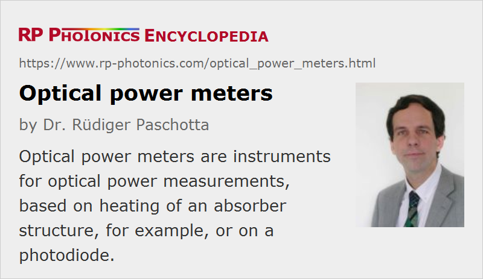

Optical Power Meters
Definition: instruments for optical power measurements, based e.g. on heating of an absorber structure or a photodiode
Alternative terms: power meters, laser power meters
German: optische Leistungsmessgeräte
Categories: photonic devices, light detection and characterization
How to cite the article; suggest additional literature
Author: Dr. Rüdiger Paschotta
An optical power meter (or laser powermeter) is an instrument for the measurement of the optical power (the delivered energy per unit time) in a light beam, for example a laser beam. Typically, it allows for power measurements only with a relatively low bandwidth, and will e.g. display only the average power when receiving a pulse train with a high pulse repetition rate, e.g. from a Q-switched or mode-locked laser. For measuring pulse energies, there are other instruments, called optical energy meters.
Most power meters are suitable only for light beams with a quite limited beam radius, not e.g. for diffuse light, but there are e.g. special sensor heads with an integrating sphere, which can accept and precisely measure even highly divergent input beams, for example from light emitting diodes.
Normally, an optical power meter comes with a sensor head (see Figure 1) containing the power sensor, which is typically mounted with a post for receiving a horizontal input light beam in a certain height above the optical table. A sensor head may be equipped with additional optical attenuators for extending the measurement range; these are particularly offered for photodiode-based devices.
The sensor head may be connected to a stand-alone display instrument, containing an analog or digital display for the laser power. Frequently, it allows the user to choose between different power ranges, and possibly to do other settings, for example concerning the speed of response (slow or fast mode) or the laser wavelength. Devices for telecom applications may also display powers in dBm, meaning decibels relative to 1 mW. Some instruments have an analog electrical output, delivering a voltage signal which is proportional to the received light power, and/or a digital interface (e.g. USB, GPIB, RS-232, WLAN or Bluetooth) for connection to a computer.
Display instruments can often be combined with different sensor heads – even with sensor heads of different type, e.g. pyroelectric and photodiode-based types. Some instruments can also work as optical energy meters.
There are also “meterless” sensor heads, which can be directly connected to a computer, typically with a USB interface. They contain only little electronics, in particular an analog-to-digital converter in addition to the digital interface, and those electronics may be integrated either into the sensor head itself or into a compact device at the USB connector or somewhere along the cable. One uses a software coming with the device for displaying values, changing measurement ranges, possibly also for data logging and similar purposes, going beyond the functionality of a typical stand-alone power meter. Such devices save the cost for an extra display and may also be quite convenient, for example for an engineer traveling with a notebook and only a minimum of extra instruments to carry. Also, such power sensors may be connected to more complex systems, for example to laser marking machines.
Sensor Types
Thermal Sensors
Most power meters are based on the principle of a thermal detector: optical power is converted to heating power in some absorber structure with a black coating, and the resulting temperature rise (or actually the temperature difference between the absorber and the mount) is measured, e.g. with a thermopile. Such a thermal power meter (see Figure 1) is useful for average powers between ≈ 0.01 W and several kilowatts (but note that a single sensor head cannot span that whole range). Typically, some cooling with a fan or even with water is required for powers above roughly 10 W.
Thermal power meters are fairly robust (although too tight focusing onto the absorber should be avoided), moderately precise, usable in a wide wavelength range (with fairly wavelength-independent sensitivity), and relatively slow.
When a thermal power meter is set for high sensitivity (responsivity), for example for a maximum power below 100 mW, its mount should not be touched with the hand during measurements. This is because any warming of the mount can induce temperature differences which modify the reading.
Photodiodes
Far more sensitive and also faster power meters can be made with photodiodes, most often based on silicon (Si), but for the near infrared also on germanium (Ge). Indium gallium arsenide (InGaAs) is less common for power meters, since large area InGaAs detectors are expensive. Powers in the microwatt region or possibly even lower can be measured. These instruments can also be used for measuring high powers when a suitable attenuator is used. They are, however, less robust than thermal power meters: they are more easily damaged when exposed to too high optical intensities.
Due to the high sensitivity of photodiodes, they are also quite suitable for sensor heads with an integrating sphere. In that case, one may also use an InGaAs photodiode, because a large input area can then be achieved despite a small area photodiode.
Also, the sensitivity of a photodiode is rather wavelength-dependent, so that a photodiode-based power meter usually requires the user to make a setting for the wavelength. The device then uses an internal calibration table to compensate for the wavelength-dependent responsivity. One should of course not forget to adjust that setting when using the power meter for a laser operating at a different wavelength, because otherwise the power calibration will be wrong. Obviously, this method does not work for beams with a very broadband or variable optical spectrum, whereas it may be perfectly suitable in situations where the laser wavelength is rarely changed.
Specifications for Power Meters
Spectral Response
The manufacturer normally specifies a certain range of optical wavelengths for which the quoted measurement accuracy is achieved. For thermal power meters, that range can be rather broad, e.g. extending far into the infrared spectral region, because it is not too difficult to make a broadband absorber, e.g. with a black coating. Note that the quoted spectral range may be smaller than the spectral response; there may be wavelength regions where the detector reacts, but not with a calibrated response.
Photodiode-based instruments may also work in a wide wavelength range, e.g. with a Si-based diode from the near ultraviolet to somewhat beyond 1 μm, but with the responsivity varying substantially in such a range. Therefore, as explained above, the user will have to set the wavelength, and the instrument will usually have to “believe” that this setting is correctly done. In principle, such a power meter may be equipped with a wavelength sensor, but this is not common.
Power Measurement Ranges
Most power meters allow the user to switch between different power measurement ranges – for example, with maximum powers of 0.1 W, 0.3 W, 1 W and 3 W. With an analog display, accurate readings are possible only when choosing an appropriate measurement range. Even for digital displays, one should choose an appropriate range, since the accuracy may suffer when measuring in a too high range.
The maximum allowed power for a particular sensor head is mostly limited by damage issues. Note, however, that one can easily damage a sensor head with optical powers well below the maximum allowed power, when delivering the input beam with an inappropriately small beam diameter. The local intensity then becomes too high, which is particularly an issue for photodiode-based devices. (Even well before damage occurs, there may be local saturation effects, leading to wrong readings.) Instrument specifications therefore often include a maximum allowed input intensity. For operation with laser pulses (particularly from Q-switched lasers), there may be an additional specification for the maximum allowed pulse fluence (in J/cm2).
The minimum measurement range is limited by measurement noise – typically by noise coming from the sensor head. That noise may be somewhat reduced by low-pass filtering, when a slower response is acceptable for the application. The lowest range will usually be chosen such that the measurement uncertainty still stays at least 10 to 20 dB below the maximum power.
Photodiode-based power sensors are far more sensitive than thermal ones. Here, the lowest measurement ranges are often in the microwatt region or possibly even lower. For the sensitive measurement ranges, one will of course have to carefully avoid influences of ambient light, e.g. by using proper shields (e.g. black anodized tubes around the beam path) and/or by working in a dark laboratory.
Accuracy
Typical measurement accuracies are of the order of ±3% or ±5% for powers near the maximum reading in a certain measurement range. Powers well below the maximum in some range may be less accurately measured.
Substantially better accuracies would require regular re-calibration and are anyway limited by detector uniformity (see below), thermal drifts and other influences.
Speed
Thermal power sensors are intrinsically relatively slow – particularly those for high powers, where the thermal capacity of the sensor is tentatively higher. Typical response times are of the order of 0.2 s to 2 s. Even photodiode-based power meters are normally not made very fast, since one could anyway not read a display which is updated e.g. 10 times per second. For power measurements with a higher measurement bandwidth, other types of instruments (certain photodetectors) must be used.
Active Area and Uniformity of Response
Typical active areas of power meters are circular or square-shaped with dimensions between 5 mm and a few centimeters. Larger active areas are typically offered by higher-power devices.
A possible problem with both thermal and photodiode-based optical power meters is the uniformity of response. For thermal power meters, a lack of uniformity can result from a dependence of the resulting absorbance or temperature distribution for different beam positions. For photodiodes, a nonuniform response can easily result from damage with too high optical intensities.
Sensor heads with an integrating sphere naturally provide the highest detector uniformity.
Electronic Outputs
Some instruments have an analog output (e.g. through a BNC socket), where the output voltage is usually proportional to the output power relative to the maximum power in a certain measurement range.
Digital interfaces are very versatile, allowing for substantially expanded functionality on a computer. For example, although data logging may be provided even by stand-alone devices, it can be more convenient to process and store such data on a computer.
Dimensions
The mechanical dimensions of an optical power sensor can be quite relevant for applications, e.g. when a sensor needs to be temporarily inserted into some beam path, where there is little available space. There are some very flat hand-held sensors, mostly based on photodiodes, which require quite little space.
Power Supply
Power meters require some electrical power, which may either be provided with an external power supply or with batteries (which are normally rechargeable). Battery-powered operation is of course convenient by eliminating another cable enter the requirement of a nearby power socket, but on the other hand the need for regular recharging can also be inconvenient. Devices connected to a computer e.g. via USB cable can get the power from there.
Power Monitors
Optical power meters are mostly used for temporary purposes, e.g. when testing laboratory setups or doing maintenance operations. For permanent monitoring of powers, mostly in the context of optical fiber communications, one often uses optical power monitors, which can be integrated into systems. Such power monitors are also available in fiber-coupled form, where the light from the source under test is supplied via a fiber cable and a fiber-optic connector. There are also devices which can be set to register only light with certain wavelengths, e.g. for measuring powers of specific WDM transmission channels.
Suppliers
The RP Photonics Buyer's Guide contains 61 suppliers for optical power meters. Among them:
Questions and Comments from Users
Here you can submit questions and comments. As far as they get accepted by the author, they will appear above this paragraph together with the author’s answer. The author will decide on acceptance based on certain criteria. Essentially, the issue must be of sufficiently broad interest.
Please do not enter personal data here; we would otherwise delete it soon. (See also our privacy declaration.) If you wish to receive personal feedback or consultancy from the author, please contact him e.g. via e-mail.
By submitting the information, you give your consent to the potential publication of your inputs on our website according to our rules. (If you later retract your consent, we will delete those inputs.) As your inputs are first reviewed by the author, they may be published with some delay.
See also: optical energy meters, laser beam characterization, optical power monitors, thermal detectors, photodetectors, photodiodes, optical power
and other articles in the categories photonic devices, light detection and characterization
|  |
If you like this page, please share the link with your friends and colleagues, e.g. via social media:
These sharing buttons are implemented in a privacy-friendly way!